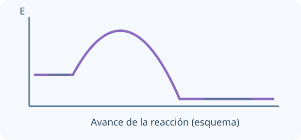

Definí primero el sistema y el entorno. Si el sistema entrega energía como calor a presión constante, su cambio de entalpía es negativo. Los enlaces se rompen absorbiendo energía y se forman liberándola; el balance de ambos procesos determina el resultado.

El cambio de energía depende de los extremos. Una ruta de menor barrera puede ser más rápida sin cambiar el equilibrio a T fija.
A presión constante, el calor intercambiado por una reacción corresponde a ΔH bajo las condiciones indicadas. Una combustión exotérmica tiene ΔH negativo para el sistema: los alrededores reciben energía. Los estados físicos importan, especialmente H₂O(l) frente a H₂O(g).
La entalpía escrita corresponde a la ecuación tal como está balanceada. Si duplicás coeficientes, duplicás ΔH; si invertís la reacción, cambia el signo. La energía específica permite comparar combustibles por gramo y no solo por mol.
Tu desafío: Calculá el calor de reacción al quemar 8,0 g de metano y distinguí su signo del calor recibido por el entorno.
Ver el ejemplo resuelto paso a paso
8,0 g de CH₄ son 0,50 mol.
qreacción ≈ −445 kJ y los alrededores reciben aproximadamente 445 kJ si no hay pérdidas.
LECCIÓN 2 / 4 · LEÉ, RESOLVÉ Y COMPROBÁ
Medir calor con un calorímetro
Empezá desde la idea.
Un calorímetro estima energía transferida a partir de un cambio de temperatura. El termómetro no mide joules directamente. Necesitás conocer masa, calor específico y qué partes del montaje absorben energía; también declarar pérdidas y aproximaciones.
Un calorímetro relaciona cambio de temperatura con energía. Si la solución aumenta su temperatura, absorbió calor; la reacción lo cedió. Para una primera aproximación usá c del agua y suponé aislamiento.
Un cálculo más cuidadoso incluye el recipiente mediante Ccal. No confundas capacidad calorífica C (J/K) con calor específico c (J/g·K). Registrar la temperatura antes y después de mezclar permite estimar la energía, pero las pérdidas al ambiente limitan el modelo.
100 g de solución aumentan 5,0 K con c = 4,18 J/(g·K).
Tu desafío: Calculá el calor absorbido por la solución y el calor de la reacción en un calorímetro ideal.
Ver el ejemplo resuelto paso a paso
qsolución = 100 × 4,18 × 5,0 = 2090 J.
Si se desprecia el calorímetro, qreacción = −2,09 kJ.
LECCIÓN 3 / 4 · LEÉ, RESOLVÉ Y COMPROBÁ
Predecir reacciones con agua
Empezá desde la idea.
Usá la serie de reactividad como una guía de tendencias, no como autorización para mezclar sustancias. Agua fría, vapor y ácidos son medios diferentes. Una capa superficial o una barrera cinética puede impedir una reacción apreciable aun cuando una transformación sea favorable.
Na₂O + H₂O forma NaOH; SO₃ + H₂O forma H₂SO₄. Un hidruro como NaH libera H₂ con agua. Algunas sales modifican pH por hidrólisis de sus iones. Un hidróxido puede disolverse aportando OH⁻ si es suficientemente soluble.
Estas son familias con límites: CuO no se transforma en un hidróxido soluble por mezclarlo con agua. Distinguí disolución, reacción e ionización. En prácticas reales, materiales muy reactivos se manejan con procedimientos específicos; acá se explora el modelo virtual.
NaH + H₂O → NaOH + H₂
TU TURNO · INTENTÁ RESOLVER ANTES DE MIRAR
Escribí la hidratación de CaO.
Tu desafío: Escribí la ecuación de hidratación de CaO y describí el carácter ácido-base del producto.
Ver el ejemplo resuelto paso a paso
CaO + H₂O → Ca(OH)₂.
Se conserva cada elemento; es exotérmica y el producto tiene comportamiento básico.
LECCIÓN 4 / 4 · LEÉ, RESOLVÉ Y COMPROBÁ
Calcular una neutralización fuerte
Empezá desde la idea.
En una neutralización fuerte, compará primero cantidades de H⁺ y OH⁻ disponibles. Si una está en exceso, determina el medio final después de reaccionar. Equivalencia significa capacidades reactivas iguales, no necesariamente volúmenes iguales ni cualquier lectura de pH 7.
Para ácido y base fuertes, identificá cuántos protones y OH⁻ reaccionan por unidad fórmula. En equivalencia los equivalentes se igualan, no necesariamente los moles de sustancias ni sus volúmenes.
Para HCl y NaOH la proporción es 1:1; para H₂SO₄ en neutralización total con NaOH es 1:2. Los iones espectadores permiten nombrar la sal: HCl con KOH produce KCl. Después de equivalencia, el exceso fuerte determina el pH.
νH cácido Vácido = νOH cbase Vbase
TU TURNO · INTENTÁ RESOLVER ANTES DE MIRAR
25,0 mL de HCl 0,100 M requieren NaOH 0,200 M.
Tu desafío: Calculá el volumen de NaOH necesario para alcanzar equivalencia.
Ver el ejemplo resuelto paso a paso
nH⁺ = 0,100 × 0,0250 = 0,00250 mol.
Vbase = 0,00250/0,200 = 0,0125 L = 12,5 mL.
02
PREDECÍ · INVESTIGÁ · EXPLICÁ
La química en tus manos.
Cargando la mesa de trabajo…
03
LISTO PARA PONER A PRUEBA TU COMPRENSIÓN
Repasá y encontrá qué volver a estudiar.
Ocho preguntas por unidad, con explicación y enlace a la lección correspondiente. Estos resultados se guardan únicamente en este navegador; no se envían al panel docente.